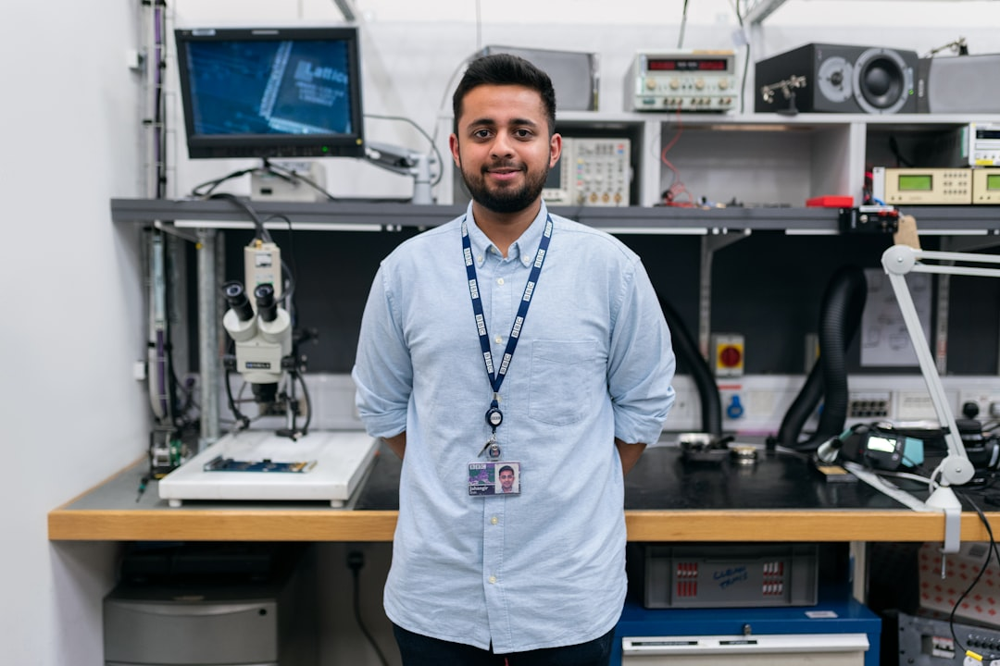

О сервисе "Компьютерный Доктор"
Сервис "Компьютерный Доктор" предлагает услуги по ремонту и обслуживанию компьютерной техники и периферии. Наши мастера имеют опыт работы с различными видами техники и готовы помочь вам с любыми проблемами которые у вас возникли.
Наша команда

Мастер-инженер
Иван Иванов - опытный инженер, специализирующийся на ремонте и обслуживании компьютерной техники.
Мастер-инженер
Пётр Петров - опытный инженер, специализирующийся на программном обеспечении и аудиотехнике.